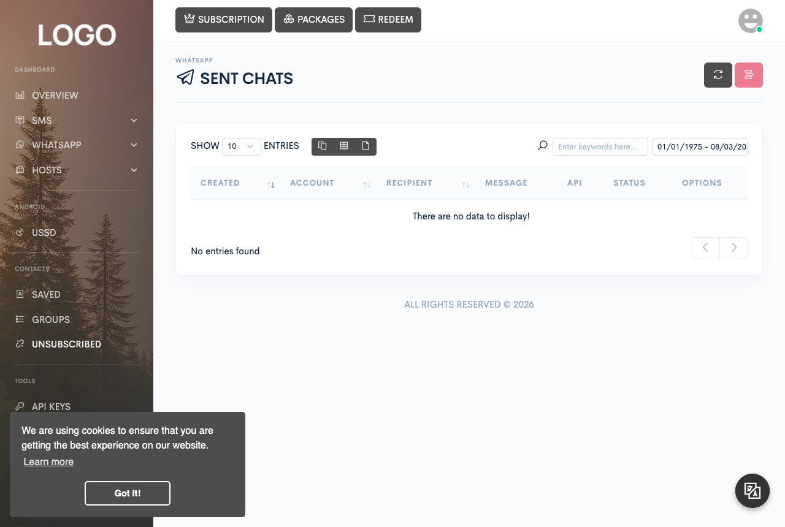

Messaging
Sending WhatsApp
Send and receive WhatsApp messages — text, media, documents, and group messages — once you've linked a WhatsApp account to your installation.

WhatsApp lives under its own menu in the dashboard sidebar, visible to accounts whose subscription includes WhatsApp: Queue, Sent, Received, Campaigns, Scheduled, and Groups.
Linking an account
Before you can send anything, a WhatsApp account has to be linked under Hosts → WhatsApp — see the WhatsApp server page under Servers & devices for how that connection works. Every send form on this page lets you pick which linked account to send from; you can have more than one.
The phone-number format the platform enforces
WhatsApp recipients come in exactly two shapes, and the platform enforces this strictly:
- A direct message is bare international digits — 5 to 15 of
them, no spaces or dashes, with an optional leading
+. Outbound sends go through the same phone-number parsing the SMS side uses, so a locally formatted number (in your own country's dialing convention) is normalized for you before it's queued. - A group message uses the full WhatsApp group identifier — a
numeric ID followed by
@g.us. Group IDs aren't something you type from memory; fetch them first (see Group messages below) and copy them from there.
Sending text
Quick send on the Queue page sends one message to one recipient or group. Text messages go through the same length limits, translation, and spintax described on the SMS page, and support the same shortener and spintax-sample tools.
Every quick send also lets you mark the message priority: a priority message is pushed to the WhatsApp server immediately, while a normal message is added to that account's send queue instead.
Sending media and documents
Quick send and the bulk forms all offer a message-type switch — Text, Media, or Document:
- Media accepts image, video, and audio files (jpg, jpeg, png, gif, mp4, mp3, or ogg). Images and video are sent with your message text as the caption; audio is sent without a caption.
- Document accepts pdf, xml, xls, xlsx, doc, or docx files, sent with their original filename preserved.
Any other file type is rejected before the message is queued.
Group messages
The Groups page has a Fetch groups action that asks a linked account's WhatsApp connection for the groups it currently belongs to and lists them in the table — this is how you get the group identifiers used above. Once fetched, a group behaves like any other recipient: paste its ID into the phone/number field of quick send, bulk send, or the spreadsheet upload.
Auto-reply
Auto-reply isn't configured from the WhatsApp menu — it lives under Tools → Actions, alongside webhook-triggered actions, via the Add auto-reply button. For a WhatsApp auto-reply, you choose the linked account it watches and a match type — exact match (case insensitive or sensitive), keyword contains, a regular expression, an AI-driven match, or none (meaning it replies to anything) — plus whether the reply should also fire on group messages. The reply itself can be text, media, or a document, using the same message-type switch as the send forms.
Bulk sending
From WhatsApp → Campaigns, Bulk send lets you paste a mix of numbers and group IDs and/or pick contact groups; Send from Excel reads an uploaded spreadsheet instead. Both let you select more than one linked account, and name the send as a campaign the same way SMS bulk sends do.
The spreadsheet must be an .xlsx file; a ready-to-fill template is
linked from the upload form. Your header row only needs one required column,
phone — every other column in your sheet is carried through per-row
and made available in the message as a custom shortcode.